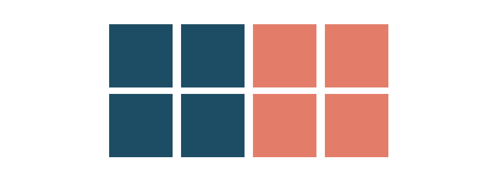
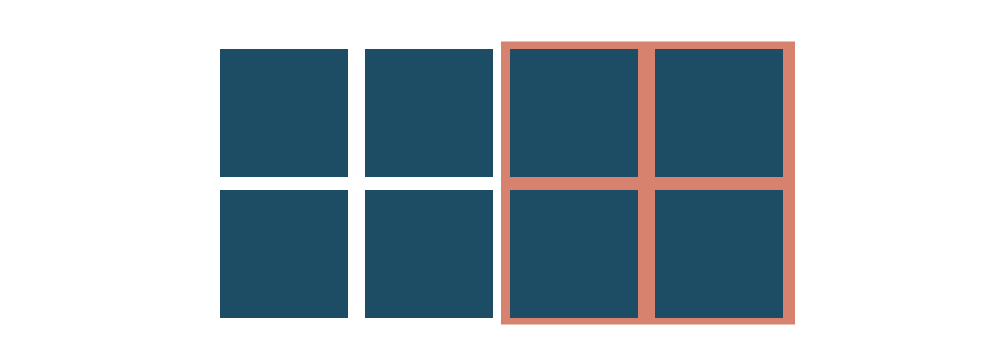

Gestaltlovene - eller Law of UX er begreber for hvordan vi mennesker oplever noget, når vi ser det. Det bruges blandt andet til web-design, grafisk design - og meget meget mere. Det er noget som desigerne skal vægte meget højt, når de producerer et design - eller andet visuel kommunikation.
Gestaltlovene eller Law of UX består af 5 love: Lov om nærhed, lighed, lukkethed, forbundethed og figur og baggrund.
Loven om nærhed - eller afstand. Er den vigtigste af gestaltlovene. Dette er det første vi mennesker forbinder til hvis noget hører sammen. Det er afstanden til hinanden. Hvis elementer er tæt på hinanden, så siger vores hjerne at de elementer hører sammen.
Loven om lighed er den næste prioritet i rækken. Ifht. visuel kommunikation, hvis loven om nærhed ikke bliver brugt, så bruger vi mennesket tit ligheden til at lade os selv fange af design - eller komposition. Det er f.eks firkanter som har samme afstand til hinanden. Der er det kun f.eks farver, skrifttype, billede, tekststørrelse der differencierer sig fra hinanden.
Loven om lukkethed handler i bund og grund om at man lukker noget af fra de andre elemtenter, uden at ændre på andet end f.eks baggrunden - eller at man kasser noget ind. Det kan ses meget på nyhedssider, faktabokse - så bokser man ting ind for at fremhæve det.
Loven om forbundethed, det er når vi mennesker ser noget som går sammen - eller er forbundet sammen, så siger vores hjerner at det hører sammen.
Loven om figur og baggrund - det er balancen i mellem f.eks tekst og baggrund. Hjernen ved ikke om det er baggrunden (billedet) eller teksten som fylder mest. Et eksempel er Rubins Vase, som vi har set en del gange i undervisningen.
Det kan bruges i designprocessen - bruges primært til at fremhæve ting, hvad vil du gerne have dine brugere til at se - og måske ikke se?
Jeg har brugt gestaltlovene til vores band-site projekt. Der brugte jeg det til at dele album og sange op, se det her: Bratmobile - Webdesign